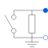
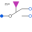
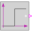

SwitchedRheostatRheostat which is shortened after a given time |

|
Diagram
{kind=link}
Information
This information is part of the Modelica Standard Library maintained by the Modelica Association.
Switched rheostat, used for starting asynchronous induction motors with slipring rotor:
The external rotor resistance RStart is shortened at time tStart.
Parameters (2)
| RStart |
Value: Type: Resistance (Ω) Description: Starting resistance |
|---|---|
| tStart |
Value: Type: Time (s) Description: Duration of switching on the starting resistor |
Connectors (2)
| plug_p |
Type: PositivePlug Description: To positive rotor plug |
|
|---|---|---|
| plug_n |
Type: NegativePlug Description: To negative rotor plug |
Components (6)
| star |
Type: Star |
|
|---|---|---|
| ground |
Type: Ground |
|
|  | idealCommutingSwitch |
Type: IdealCommutingSwitch |
| rheostat |
Type: Resistor |
|
| starRheostat |
Type: Star |
|
|  | booleanStep |
Type: BooleanStep[m] |
Used in Examples (4)
|
Modelica.Electrical.Machines.Examples.AsynchronousInductionMachines
Test example: AsynchronousInductionMachineSlipRing |
|
|
Modelica.Magnetic.FundamentalWave.Examples.BasicMachines
Starting of asynchronous induction machine with slip rings |
|
|
Modelica.Magnetic.FundamentalWave.Examples.BasicMachines
Starting of multi phase asynchronous induction machine with slip rings |
|
|
Modelica.Magnetic.QuasiStatic.FundamentalWave.Examples.BasicMachines.InductionMachines
Starting of induction machine with slip rings |